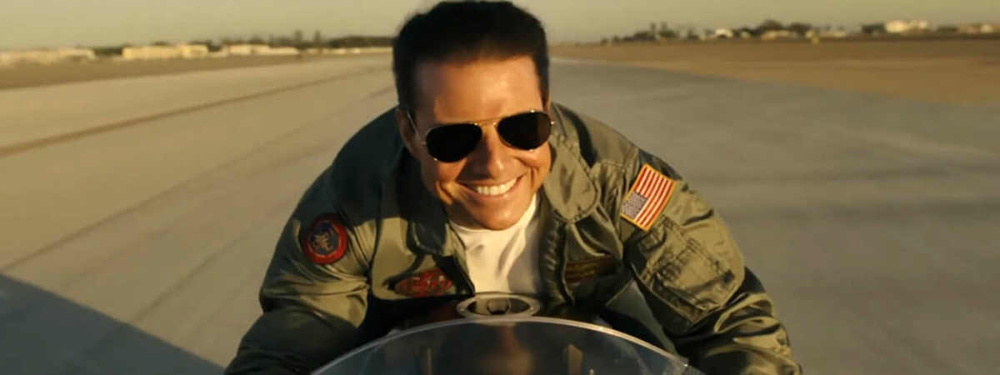

2020年有哪些好看的電影？美國 IMDb影評網站，根據站內用戶關注每部電影的頁面瀏覽量統計，列出2020最受期待的10部電影名單。這份名單以「超級英雄電影」及「娛樂動作大片」類型，受到影迷注目，而《猛禽小隊：小丑女大解放》擊敗《黑寡婦》成了最期待電影排行榜的首位。如果想追上熱門的電影，這份名單，可視為2020年電影推薦的好選擇。
《玩命關頭9》（Fast & Furious 9）
從《玩命關頭7》到《玩命關頭8》全球票房都大賣超過10億美元，巨石強森與傑森史塔森合作衍生的外傳《玩命關頭：特別行動》，全球票房也有7.58億美元，這系列電影是環球影業吸金的招牌，《玩命關頭9》自然受到矚目，這也是「唐老大」馮迪索在與巨石強森不合八卦紛擾後，要證明自己扛下票房的壓力。top
《金牌特務：金士曼起源》（The King’s Man）
《金牌特務：金士曼起源》是「金牌特務」系列電影的第三部作品，2015年《金牌特務》的前傳，故事背景時間設定在第一次世界大戰。過往導演馬修范恩一向不太喜歡拍攝續集電影，但對《金牌特務》這系列的電影打造，相當感興趣，可參考：關於《金牌特務：機密對決》，你會想了解的5件事！top
《沙丘魔堡》（Dune）
《沙丘魔堡》是重啟的史詩科幻電影，由《銀翼殺手2049》導演丹尼維勒納夫執導，劇情改編自1965年英文同名科幻小說《沙丘》，1984年導演大衛林區即曾拍攝電影。新版的《沙丘魔堡》演員有提摩西夏勒梅、蕾貝卡弗格森、奧斯卡伊薩克、喬許布洛林、史戴倫史柯斯嘉、辛蒂亞及巴帝斯塔等，上映時間定於2020年12月18日。top
《神力女超人 1984》（Wonder Woman 1984）
2017年《神力女超人》，無疑讓「DC擴展宇宙」注入一股強心針，蓋兒加朵飾演黛安娜普林斯的「神力女超人」就是目前DC的超級英雄重心，《神力女超人1984》是系列電影的第二部，克里斯潘恩飾演的史蒂夫崔佛也回歸，從預告片上檔，就吸引大批影迷的目光。top
《花木蘭》（Mulan）
從2020最值得期待的電影榜單來看，感覺迪士尼在2020年全球票房，可能不會如2019年全年度輕鬆突破百億美元票房那樣亮眼，而真人版電影《花木蘭》在中國電影市場，必須得創出好票房，否則北美市場要開出高票房，恐有難度。電影定於2020年3月27日上映。top
《黑寡婦》（Black Widow）
 《黑寡婦》是漫威電影宇宙第四階段的首部電影，不過不知是否先前受到故事相似於《紅雀》題材的流言影響（事實上，從預告上來看並非如此），使得影迷熱度未如2019年《驚奇隊長》般，受到漫威迷期待。電影定於2020年5月1日上映。top
《黑寡婦》是漫威電影宇宙第四階段的首部電影，不過不知是否先前受到故事相似於《紅雀》題材的流言影響（事實上，從預告上來看並非如此），使得影迷熱度未如2019年《驚奇隊長》般，受到漫威迷期待。電影定於2020年5月1日上映。top
《007：生死交戰》（No Time to Die）
《007：生死交戰》是「詹姆士龐德系列電影」的第二十五部電影，2015年電影《007：惡魔四伏》的續集，當時原本丹尼爾克雷格無意再接演，最後在各方遊說及影迷期待下，再次回歸，但確定他是最後一次擔任龐德的演出了。top
《捍衛戰士：獨行俠》（Top Gun: Marverick）
《捍衛戰士：獨行俠》是1986年電影《捍衛戰士》的續集，「阿湯哥」湯姆克魯斯在34年後，回到自己年輕時爆紅的大銀幕角色。電影的期待熱度，自然受到影迷關注，而當年「冰人」一角的方基墨也會回歸。其他演員還有麥爾斯泰勒、珍妮佛康納莉、喬漢姆及艾德哈里斯等人，《捍衛戰士：獨行俠》定於2020年6月26日上映。top
《音速小子》（Sonic the Hedgehog）
《音速小子》電影原本定在2019年11月15日上映，因5月時，首部預告片中的外型設計，引起玩家及影迷反感，不得不重新後製、特效處理，11月再次推出的預告片，獲得正面的回應，派拉蒙影業也敲定於2020年2月14日在美國上映。top
《猛禽小隊：小丑女大解放》（Birds of Prey）
2020最值得期待的電影首位，是瑪格羅比在2016年《自殺突擊隊》飾演「小丑女」所衍生出的獨立電影《猛禽小隊：小丑女大解放》。除了集結瑪麗伊莉莎白文斯蒂德、琴妮齊莫雷特貝爾及蘿西培瑞茲等女星，並由華裔女導演閻羽茜執導，滿滿的女力，同時也是「DC擴展宇宙」中第一部院線上映的限制級電影。top